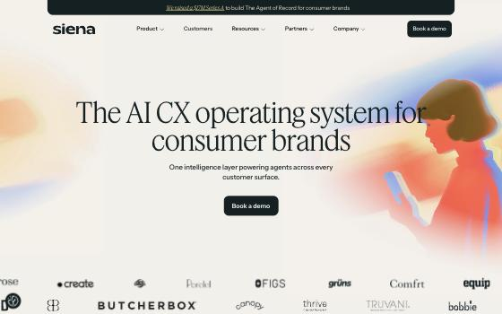
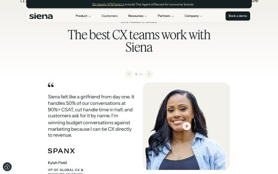
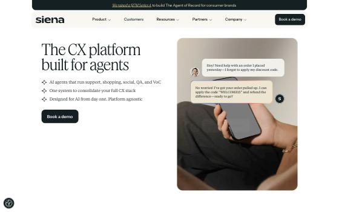
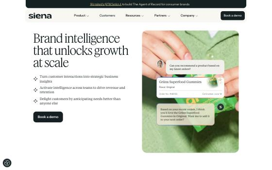
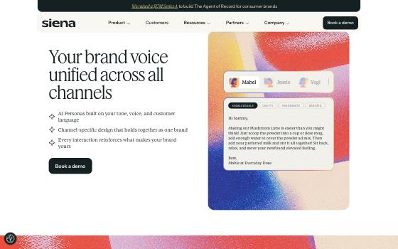
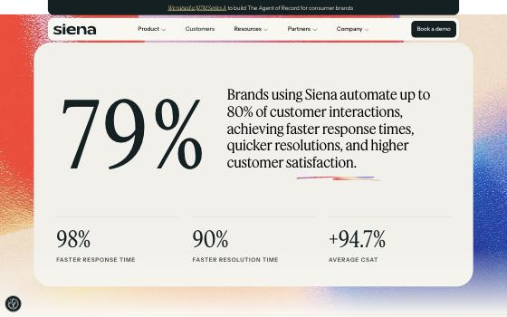
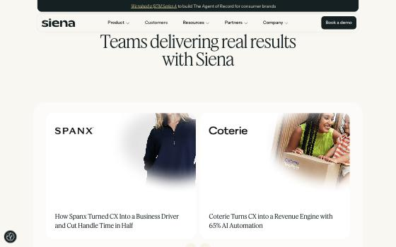
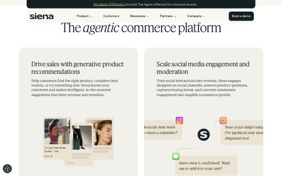
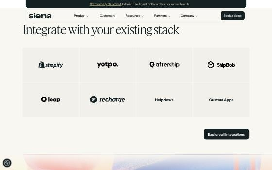
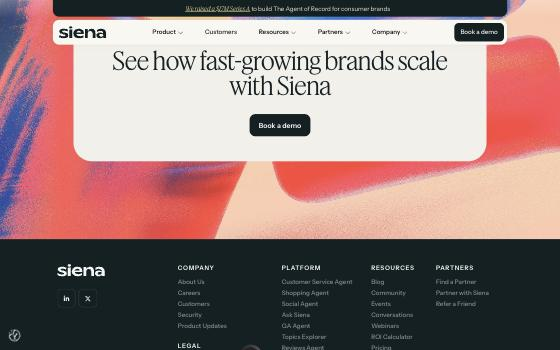

Creative direction built around one idea: knowing every customer. Siena’s support, shopping and social agents share one memory of each customer.
The brand already leans classical: a serif with italics, a name taken from a city of painters, an event called Siena Renaissance. I pushed that further. The hero borrows the painted oculus in Mantegna’s Camera degli Sposi, with customers looking down from the rim, and the ones Siena knows get a gold halo, the way Siena’s painters marked the people who mattered most.
Below is the current siena.cx, section by section, with what I changed and why.

“Operating system” is category language. Every CX AI company uses it, so it doesn’t set Siena apart. It also undersells the change the brief describes, from one support tool to several agents sharing one memory.
The gradient and blurred portrait are what most AI startups used from 2023 to 2025. The new hero is a picture you can describe after one look. It shows real people, and the ones Siena knows have a gold halo, the way the painters of Siena marked the people who mattered.
The Series A banner becomes a small “New” pill inside the hero, so the first screen has a single focus.
→ New hero: “AI agents that remember every customer.”

Every logo stays, with the same headline, in two slow rows running in opposite directions.
The carousel goes. Few people click through to quote 7 of 11. Eight of the testimonials stay, word for word, in an open set you can read at a glance, and each one links to its story.
→ Logos, straight after the manifesto · “In their words.”

Three bullets of platform language sit next to a hand holding a phone. The points are right, but the section describes them without showing them.
They become the three captions in “From chaos, orders.”, and each one points at the part of the Inbox that does it.
→ The captions in “From chaos, orders.”

This is the real differentiator, that Siena knows the customer, written as a consulting headline with mock chat bubbles over stock photography.
The new page shows it in the product. Owen’s dinner set arrived cracked two days before a wedding. His profile already knows the order, the deadline, that he prefers navy and that he sent a gift to the same address last December.
→ “From chaos, orders.”, ending on “Know thy customer.”

Brand voice matters, but on its own it’s a feature rather than a reason to buy. It becomes one card in the platform grid: “Make them want to speak to an agent.”
A real reply with its voice settings beside it (Warm · Plain English · Never says “ticket”) replaces the Personas card, so you can see the control at work.
→ “One memory. Every agent.”

“Up to 80%” goes in the first screen.
The other three have no baseline. 98% faster than what? 90% faster resolution compared with what? They’re replaced by named numbers from named customers: SPANX 50% at 90%+ CSAT, Kitsch 68%, Coterie 65%, Simple Modern 98% CSAT.
→ 80% to the hero · named numbers to “One memory. Every agent.”

Thirteen cards sit in a second carousel, each with a long blog headline. With two carousels on one page, people are unlikely to read either.
Each testimonial now links straight to its story, so every case study is one click from its quote.
→ “In their words.”, “Read the story →”

All six cards have equal weight, so nothing stands out. The headline stays, with the subhead “One memory. Every agent.”
Four cards, each a job a CX lead recognises: one inbox for the team and the agents, Siena’s voice, comments into customers (with eskiin’s numbers), and “where’s my order?” end to end (with SPANX’s). Social and shopping also get the designed moment in section 3.
→ “One memory. Every agent.” · “From chaos, orders.”

Buyers need to know it works with Shopify and their help desk. That reassures them, but it won’t make them buy, so the grid closes the platform section as “Works with the stack you already use.” instead of having a section of its own.
→ The end of “One memory. Every agent.”

This one stays as it is. The line is clear, the art is theirs, and it seems to perform well. The founders’ line, “Humanize the internet.”, appears where the hero flight lands instead.
→ Unchanged, at the end of the page
Before this goes live: the card “Your team and your agents, in one inbox.” in “One memory. Every agent.” shows Siena Inbox, which hasn’t launched. Keep it for launch day, and until then swap it for the Customer Intelligence profile.
← Back to the new homepage